Windows Forms samples
Short samples, one idea each — controls, layout, events, drawing and dialogs. Every card has a real screenshot and the full source.
Run one with ring 06_listbox.ring from samples/UsingDotNet/Forms; with --selftest it checks itself and closes. Click Source code on a card to read the program, or click the picture to enlarge it.
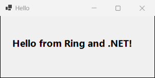
Hello form
The smallest window: a form with a label
ring samples/UsingDotNet/Forms/01_hello_form.ringSource code
# The smallest window: a form with a label
load "dotnet.ring"
using {
"System.Drawing"
"System.Windows.Forms"
}
oForm = uiForm("Hello",300,120)
oLabel = uiLabel(oForm,"Hello from Ring and .NET!",20,40,260,30)
oLabel.Font = uiFont("Segoe UI",14,true)
uiRun(oForm)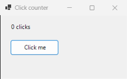
Button click
A button that counts its clicks
ring samples/UsingDotNet/Forms/02_button_click.ringSource code
# A button that counts its clicks
load "dotnet.ring"
using {
"System.Drawing"
"System.Windows.Forms"
}
nClicks = 0
oForm = uiForm("Click counter",260,130)
oCount = uiLabel(oForm,"0 clicks",20,15,220,24)
uiButton(oForm,"Click me",20,50,100,32,"clicked()")
uiRun(oForm)
# --------------------------------------------------------------------------
func clicked
nClicks++
oCount.Text = "" + nClicks + " clicks"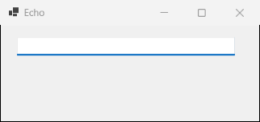
Textbox echo
Type in the text box: the label follows (TextChanged event)
ring samples/UsingDotNet/Forms/03_textbox_echo.ringSource code
# Type in the text box: the label follows (TextChanged event)
load "dotnet.ring"
using {
"System.Drawing"
"System.Windows.Forms"
}
oForm = uiForm("Echo",320,120)
oEdit = uiTextBox(oForm,20,15,270,26)
oEcho = uiLabel(oForm,"",20,55,270,26)
oEdit.setTextChangedEvent("oEcho.Text = 'You typed: ' + oEdit.Text")
uiRun(oForm)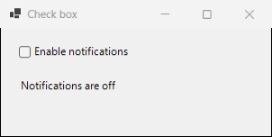
Checkbox
A check box changes a label
ring samples/UsingDotNet/Forms/04_checkbox.ringSource code
# A check box changes a label
load "dotnet.ring"
using {
"System.Drawing"
"System.Windows.Forms"
}
oForm = uiForm("Check box",300,120)
oCheck = uiCheckBox(oForm,"Enable notifications",20,15,240,24,"changed()")
oState = uiLabel(oForm,"Notifications are off",20,55,240,24)
uiRun(oForm)
# --------------------------------------------------------------------------
func changed
if oCheck.Checked
oState.Text = "Notifications are on"
else
oState.Text = "Notifications are off"
ok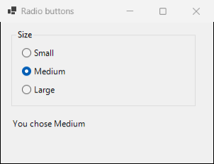
Radio buttons
Radio buttons in a group box
ring samples/UsingDotNet/Forms/05_radio_buttons.ringSource code
# Radio buttons in a group box
load "dotnet.ring"
using {
"System.Drawing"
"System.Windows.Forms"
}
oForm = uiForm("Radio buttons",300,200)
oGroup = new GroupBox() {
Text = "Size"
Location = new Point(15,10)
Size = new Size(260,110)
}
oForm.Controls.Add(oGroup)
aRadios = []
nY = 22
for cSize in ["Small","Medium","Large"]
oRadio = new RadioButton() {
Text = cSize
Location = new Point(15,nY)
Size = new Size(120,24)
setClickEvent("show()")
}
oGroup.Controls.Add(oRadio)
aRadios + oRadio
nY += 26
next
oChoice = uiLabel(oForm,"Choose a size",15,135,260,24)
aRadios[2].Checked = True
uiRun(oForm)
# --------------------------------------------------------------------------
func show
for oRadio in aRadios
if oRadio.Checked
oChoice.Text = "You chose " + oRadio.Text
ok
next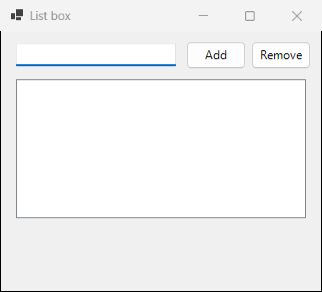
Listbox
A list box: add, remove and the selected item
ring samples/UsingDotNet/Forms/06_listbox.ringSource code
# A list box: add, remove and the selected item
load "dotnet.ring"
using {
"System.Drawing"
"System.Windows.Forms"
}
oForm = uiForm("List box",320,260)
oEdit = uiTextBox(oForm,15,12,160,26)
uiButton(oForm,"Add",185,10,60,28,"addItem()")
uiButton(oForm,"Remove",250,10,60,28,"removeItem()")
oList = uiListBox(oForm,15,48,290,150)
oSelected = uiLabel(oForm,"",15,205,290,24)
oList.setSelectedIndexChangedEvent("oSelected.Text = 'Selected: ' + oList.Text")
uiRun(oForm)
# --------------------------------------------------------------------------
func addItem
if trim(oEdit.Text) != ""
oList.Items.Add(oEdit.Text)
oEdit.Text = ""
ok
func removeItem
if oList.SelectedIndex >= 0
oList.Items.RemoveAt(oList.SelectedIndex)
ok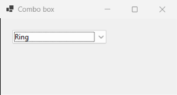
Combobox
A drop-down list
ring samples/UsingDotNet/Forms/07_combobox.ringSource code
# A drop-down list
load "dotnet.ring"
using {
"System.Drawing"
"System.Windows.Forms"
}
oForm = uiForm("Combo box",300,130)
oCombo = uiComboBox(oForm,20,20,160,["Ring","Python","Lua","C"])
oChoice = uiLabel(oForm,"",20,65,260,24)
oCombo.setSelectedIndexChangedEvent("oChoice.Text = 'Language: ' + oCombo.Text")
uiRun(oForm)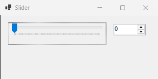
Numeric trackbar
A track bar and a numeric box that follow each other
ring samples/UsingDotNet/Forms/08_numeric_trackbar.ringSource code
# A track bar and a numeric box that follow each other
load "dotnet.ring"
using {
"System.Drawing"
"System.Windows.Forms"
}
oForm = uiForm("Slider",320,130)
oBar = new TrackBar() {
Location = new Point(15,15)
Size = new Size(200,40)
Maximum = 100
}
oForm.Controls.Add(oBar)
oNumber = new NumericUpDown() {
Location = new Point(230,18)
Size = new Size(65,26)
Maximum = 100
}
oForm.Controls.Add(oNumber)
oBar.setValueChangedEvent("oNumber.Value = oBar.Value")
oNumber.setValueChangedEvent("oBar.Value = oNumber.Value")
uiRun(oForm)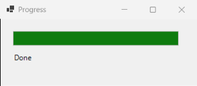
Progressbar timer
A progress bar driven by a timer
ring samples/UsingDotNet/Forms/09_progressbar_timer.ringSource code
# A progress bar driven by a timer
load "dotnet.ring"
using {
"System.Drawing"
"System.Windows.Forms"
}
nPercent = 0
oForm = uiForm("Progress",320,110)
oBar = new ProgressBar() {
Location = new Point(20,20)
Size = new Size(270,24)
}
oForm.Controls.Add(oBar)
oText = uiLabel(oForm,"0%",20,55,270,24)
oTimer = uiTimer(100,"advance()")
oTimer.Start()
uiRun(oForm)
# --------------------------------------------------------------------------
func advance
nPercent += 10
oBar.Value = nPercent
oText.Text = "" + nPercent + "%"
if nPercent >= 100
oTimer.Stop()
oText.Text = "Done"
ok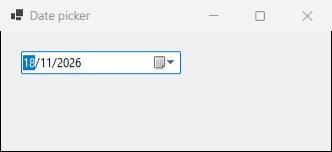
Datetimepicker
A date picker and the weekday of the chosen date
ring samples/UsingDotNet/Forms/10_datetimepicker.ringSource code
# A date picker and the weekday of the chosen date
load "dotnet.ring"
using {
"System.Drawing"
"System.Windows.Forms"
}
oForm = uiForm("Date picker",330,120)
oPicker = new DateTimePicker() {
Location = new Point(20,20)
Size = new Size(160,26)
Format = "Short"
}
oForm.Controls.Add(oPicker)
oDay = uiLabel(oForm,"",20,65,290,24)
oPicker.setValueChangedEvent("showDay()")
uiRun(oForm)
# --------------------------------------------------------------------------
func showDay
oDay.Text = oPicker.Value.DayOfWeek + ", day " + oPicker.Value.DayOfYear + " of the year"
Menu status
A menu bar and a status bar
ring samples/UsingDotNet/Forms/11_menu_status.ringSource code
# A menu bar and a status bar
load "dotnet.ring"
using {
"System.Drawing"
"System.Windows.Forms"
}
oForm = uiForm("Menu",360,200)
uiMenu(oForm,[
["File",[["New","say('New file')"],["Open","say('Open file')"],["-",""],["Exit","oForm.Close()"]]],
["Help",[["About","say('About this program')"]]]
])
oStatus = new StatusStrip()
oMessage = new ToolStripStatusLabel()
oMessage.Text = "Ready"
oStatus.Items.Add(oMessage)
oForm.Controls.Add(oStatus)
uiRun(oForm)
# --------------------------------------------------------------------------
func say cText
oMessage.Text = cText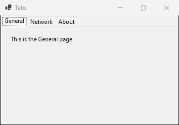
Tabcontrol
Tabs with different content
ring samples/UsingDotNet/Forms/12_tabcontrol.ringSource code
# Tabs with different content
load "dotnet.ring"
using {
"System.Drawing"
"System.Windows.Forms"
}
oForm = uiForm("Tabs",360,220)
oTabs = new TabControl()
oTabs.Dock = "Fill"
for cName in ["General","Network","About"]
oPage = new TabPage()
oPage.Text = cName
oTabs.TabPages.Add(oPage)
uiLabel(oPage,"This is the " + cName + " page",15,15,300,24)
next
oForm.Controls.Add(oTabs)
oTabs.setSelectedIndexChangedEvent("oForm.Text = 'Tabs - ' + oTabs.SelectedTab.Text")
uiRun(oForm)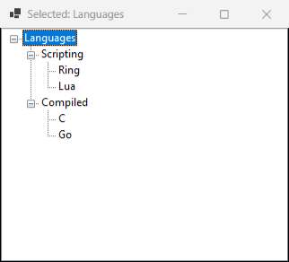
Treeview
A tree of nodes with the selection event
ring samples/UsingDotNet/Forms/13_treeview.ringSource code
# A tree of nodes with the selection event
load "dotnet.ring"
using {
"System.Drawing"
"System.Windows.Forms"
}
oForm = uiForm("Tree",320,260)
oTree = new TreeView()
oTree.Dock = "Fill"
oRoot = oTree.Nodes.Add("Languages")
oScripting = oRoot.Nodes.Add("Scripting")
oScripting {
Nodes.Add("Ring")
Nodes.Add("Lua")
}
oCompiled = oRoot.Nodes.Add("Compiled")
oCompiled {
Nodes.Add("C")
Nodes.Add("Go")
}
oForm.Controls.Add(oTree)
oTree.ExpandAll()
oTree.setAfterSelectEvent("oForm.Text = 'Selected: ' + oTree.SelectedNode.Text")
uiRun(oForm)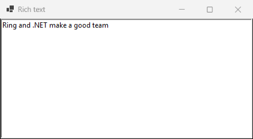
Richtextbox
Formatting the selected text of a rich text box
ring samples/UsingDotNet/Forms/14_richtextbox.ringSource code
# Formatting the selected text of a rich text box
load "dotnet.ring"
using {
"System.Drawing"
"System.Windows.Forms"
}
oForm = uiForm("Rich text",420,200)
oRich = new RichTextBox()
oRich.Dock = "Fill"
oForm.Controls.Add(oRich)
oRich.Text = "Ring and .NET make a good team"
uiRun(oForm)
Picturebox drawing
Draw shapes and text on a bitmap (UiCanvas)
ring samples/UsingDotNet/Forms/15_picturebox_drawing.ringSource code
# Draw shapes and text on a bitmap (UiCanvas)
load "dotnet.ring"
using {
"System.Drawing"
"System.Windows.Forms"
}
oForm = uiForm("Drawing",320,240)
oPicture = uiPictureBox(oForm,10,10,300,220)
oCanvas = new UiCanvas(oPicture)
oCanvas.clear("White")
oCanvas.fillRect(20,20,100,60,"SteelBlue")
oCanvas.fillCircle(200,70,40,"Orange")
oCanvas.drawRect(20,110,120,80,"Black")
oCanvas.line(150,120,290,200,"Red",4)
oCanvas.text("Drawn from Ring",150,10,"Black",12)
oCanvas.show()
uiRun(oForm)
Mouse events
Mouse position and buttons
ring samples/UsingDotNet/Forms/16_mouse_events.ringSource code
# Mouse position and buttons
load "dotnet.ring"
using {
"System.Drawing"
"System.Windows.Forms"
}
oForm = uiForm("Mouse",320,160)
oArea = uiPanel(oForm,10,10,300,100)
oArea {
BackColor = uiColor("LightYellow")
BorderStyle = "FixedSingle"
}
oInfo = uiLabel(oForm,"Move the mouse over the yellow area",10,120,300,24)
oArea {
setMouseMoveEvent("moved(aDotNetArgs[2].X,aDotNetArgs[2].Y)")
setMouseDownEvent("pressed(aDotNetArgs[2].Button,aDotNetArgs[2].X,aDotNetArgs[2].Y)")
}
uiRun(oForm)
# --------------------------------------------------------------------------
func moved nX, nY
oInfo.Text = "x=" + nX + " y=" + nY
func pressed cButton, nX, nY
oInfo.Text = cButton + " button at " + nX + "," + nY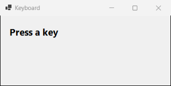
Keyboard events
Key events: KeyDown and KeyPress
ring samples/UsingDotNet/Forms/17_keyboard_events.ringSource code
# Key events: KeyDown and KeyPress
load "dotnet.ring"
using {
"System.Drawing"
"System.Windows.Forms"
}
oForm = uiForm("Keyboard",340,140)
oForm.KeyPreview = True
oLast = uiLabel(oForm,"Press a key",15,20,300,28)
oLast.Font = uiFont("Segoe UI",14,true)
oChars = uiLabel(oForm,"",15,60,300,24)
oForm {
setKeyDownEvent("keyDown(aDotNetArgs[2].KeyCode)")
setKeyPressEvent("keyPress(aDotNetArgs[2].KeyChar)")
}
uiRun(oForm)
# --------------------------------------------------------------------------
func keyDown cKey
oLast.Text = "KeyDown: " + cKey
func keyPress cChar
oChars.Text += cChar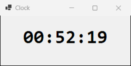
Timer clock
A digital clock with a timer
ring samples/UsingDotNet/Forms/18_timer_clock.ringSource code
# A digital clock with a timer
load "dotnet.ring"
using {
"System.Drawing"
"System.Windows.Forms"
}
oForm = uiForm("Clock",260,100)
oClock = uiLabel(oForm,"",10,20,240,50)
oClock {
Font = uiFont("Consolas",28,true)
TextAlign = "MiddleCenter"
}
oTimer = uiTimer(1000,"tick()")
tick()
oTimer.Start()
uiRun(oForm)
# --------------------------------------------------------------------------
func tick
oNow = new DateTime(2000,1,1).Now
oClock.Text = oNow.Format("HH:mm:ss")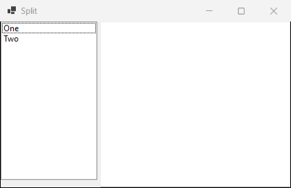
Splitcontainer
A split container with two panels
ring samples/UsingDotNet/Forms/19_splitcontainer.ringSource code
# A split container with two panels
load "dotnet.ring"
using {
"System.Drawing"
"System.Windows.Forms"
}
oForm = uiForm("Split",420,240)
oSplit = new SplitContainer()
oSplit.Dock = "Fill"
oForm.Controls.Add(oSplit)
oSplit.SplitterDistance = 140
oList = new ListBox() {
Dock = "Fill"
Items.Add("One")
Items.Add("Two")
}
oSplit.Panel1.Controls.Add(oList)
oText = new TextBox() {
Dock = "Fill"
Multiline = True
}
oSplit.Panel2.Controls.Add(oText)
oList.setSelectedIndexChangedEvent("oText.Text = 'You selected ' + oList.Text")
uiRun(oForm)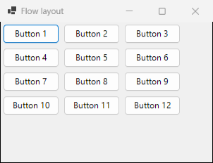
Flowlayout
Buttons in a flow layout panel that wraps
ring samples/UsingDotNet/Forms/20_flowlayout.ringSource code
# Buttons in a flow layout panel that wraps
load "dotnet.ring"
using {
"System.Drawing"
"System.Windows.Forms"
}
oForm = uiForm("Flow layout",300,200)
oFlow = new FlowLayoutPanel()
oFlow.Dock = "Fill"
oForm.Controls.Add(oFlow)
addButtons()
uiRun(oForm)
# --------------------------------------------------------------------------
# adds twelve buttons to the flow panel; they wrap to the next row when the row is full
func addButtons
for nButton = 1 to 12
oButton = new Button() {
Text = "Button " + nButton
Size = new Size(80,28)
}
oFlow.Controls.Add(oButton)
next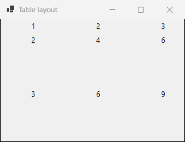
Tablelayout
A grid of labels in a table layout panel
ring samples/UsingDotNet/Forms/21_tablelayout.ringSource code
# A grid of labels in a table layout panel
load "dotnet.ring"
using {
"System.Drawing"
"System.Windows.Forms"
}
oForm = uiForm("Table layout",300,200)
oTable = new TableLayoutPanel() {
Dock = "Fill"
ColumnCount = 3
RowCount = 3
}
for nRow = 1 to 3
for nColumn = 1 to 3
oCell = new Label() {
Text = "" + (nRow * nColumn)
Dock = "Fill"
TextAlign = "MiddleCenter"
}
oTable.Controls.Add([ :control = oCell, :column = nColumn - 1, :row = nRow - 1 ])
next
next
oForm.Controls.Add(oTable)
uiRun(oForm)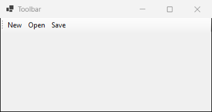
Toolbar
A tool strip with buttons
ring samples/UsingDotNet/Forms/22_toolbar.ringSource code
# A tool strip with buttons
load "dotnet.ring"
using {
"System.Drawing"
"System.Windows.Forms"
}
oForm = uiForm("Toolbar",360,160)
oBar = new ToolStrip()
for cName in ["New","Open","Save"]
oTool = new ToolStripButton() {
Text = cName
setClickEvent("oStatus.Text = 'Clicked ' + '" + cName + "'")
}
oBar.Items.Add(oTool)
next
oForm.Controls.Add(oBar)
oStatus = uiLabel(oForm,"",15,50,320,24)
uiRun(oForm)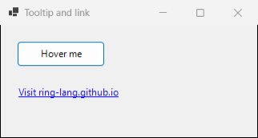
Tooltip linklabel
A tooltip and a link label
ring samples/UsingDotNet/Forms/24_tooltip_linklabel.ringSource code
# A tooltip and a link label
load "dotnet.ring"
using {
"System.Drawing"
"System.Windows.Forms"
}
oForm = uiForm("Tooltip and link",320,140)
oButton = uiButton(oForm,"Hover me",20,20,110,32,"")
oTip = new ToolTip()
oTip.SetToolTip(oButton,"This button only has a tooltip")
oLink = new LinkLabel() {
Text = "Visit ring-lang.github.io"
Location = new Point(20,75)
Size = new Size(260,24)
setLinkClickedEvent("linkClicked()")
}
oForm.Controls.Add(oLink)
oOpened = uiLabel(oForm,"",20,105,260,24)
uiRun(oForm)
# --------------------------------------------------------------------------
func linkClicked
oOpened.Text = "link clicked"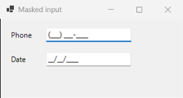
Maskedtextbox
A masked text box for phone numbers and dates
ring samples/UsingDotNet/Forms/25_maskedtextbox.ringSource code
# A masked text box for phone numbers and dates
load "dotnet.ring"
using {
"System.Drawing"
"System.Windows.Forms"
}
oForm = uiForm("Masked input",300,130)
uiLabel(oForm,"Phone",15,18,50,22)
oPhone = new MaskedTextBox() {
Mask = "(000) 000-0000"
Location = new Point(75,15)
Size = new Size(140,26)
}
oForm.Controls.Add(oPhone)
uiLabel(oForm,"Date",15,58,50,22)
oDate = new MaskedTextBox() {
Mask = "00/00/0000"
Location = new Point(75,55)
Size = new Size(140,26)
}
oForm.Controls.Add(oDate)
uiRun(oForm)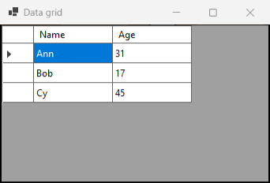
Datagridview
A data grid bound to a DataTable
ring samples/UsingDotNet/Forms/26_datagridview.ringSource code
# A data grid bound to a DataTable
load "dotnet.ring"
using {
"System.Data"
"System.Drawing"
"System.Windows.Forms"
}
oTable = new DataTable()
oTable.Columns.Add([ :columnName = "Name", :type = "System.String" ])
oTable.Columns.Add([ :columnName = "Age", :type = "System.Int32" ])
oTable {
Rows.Add(["Ann",31])
Rows.Add(["Bob",17])
Rows.Add(["Cy",45])
}
oForm = uiForm("Data grid",340,200)
oGrid = new DataGridView() {
Dock = "Fill"
DataSource = oTable
ReadOnly = True
AllowUserToAddRows = False
}
oForm.Controls.Add(oGrid)
uiRun(oForm)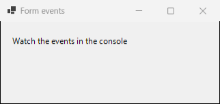
Form events
The life of a form: Load, Shown, Resize and FormClosing events
ring samples/UsingDotNet/Forms/27_form_events.ringSource code
# The life of a form: Load, Shown, Resize and FormClosing events
load "dotnet.ring"
using {
"System.Drawing"
"System.Windows.Forms"
}
aLog = []
oForm = uiForm("Form events",320,120)
oForm {
setLoadEvent("aLog + 'Load'")
setResizeEvent("aLog + 'Resize'")
setFormClosingEvent("aLog + 'FormClosing'")
}
uiLabel(oForm,"Watch the events in the console",15,20,280,24)
uiRun(oForm)
dnAssert("closing event ran",find(aLog,"FormClosing") > 0,True)
return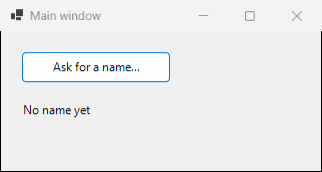
Modal dialog
A modal dialog form that returns a value
ring samples/UsingDotNet/Forms/28_modal_dialog.ringSource code
# A modal dialog form that returns a value
load "dotnet.ring"
using {
"System.Drawing"
"System.Windows.Forms"
}
oDialog = "" # globals of the dialog (the code of its events runs outside the function that builds it)
oBox = ""
oOk = ""
oForm = uiForm("Main window",320,140)
oResult = uiLabel(oForm,"No name yet",20,70,280,24)
uiButton(oForm,"Ask for a name...",20,20,150,32,"askName()")
uiRun(oForm)
# --------------------------------------------------------------------------
# builds a small dialog; returns the text when OK was pressed, "" otherwise
func askNameDialog cPreset
# (global variables: the code of an event runs outside this function)
oDialog = uiForm("What is your name?",300,120)
oDialog {
FormBorderStyle = "FixedDialog"
StartPosition = "CenterParent"
}
oBox = uiTextBox(oDialog,15,15,260,26)
oBox.Text = cPreset
oOk = uiButton(oDialog,"OK",110,60,80,30,"")
oOk.DialogResult = "OK"
oDialog.AcceptButton = oOk
if uiSelfTest()
# in a test the dialog confirms itself as soon as it is shown
oDialog.setShownEvent("oOk.PerformClick()")
ok
if oDialog.ShowDialog(NULL) = "OK"
return oBox.Text
ok
return ""
func askName
cName = askNameDialog("")
if cName != ""
oResult.Text = "Hello, " + cName + "!"
ok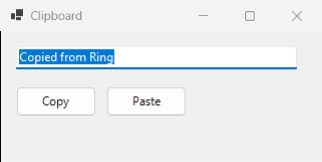
Clipboard
Copy text to the clipboard and read it back
ring samples/UsingDotNet/Forms/29_clipboard.ringSource code
# Copy text to the clipboard and read it back
load "dotnet.ring"
using {
"System.Drawing"
"System.Windows.Forms"
}
oForm = uiForm("Clipboard",320,130)
oEdit = uiTextBox(oForm,15,15,280,26)
oEdit.Text = "Copied from Ring"
uiButton(oForm,"Copy",15,55,80,30,"copyText()")
uiButton(oForm,"Paste",105,55,80,30,"pasteText()")
oPasted = uiLabel(oForm,"",15,95,280,24)
uiRun(oForm)
# --------------------------------------------------------------------------
func copyText
oClipboard = new Clipboard()
oClipboard.SetText(oEdit.Text)
func pasteText
oClipboard = new Clipboard()
cText = oClipboard.GetText(NULL)
oPasted.Text = cText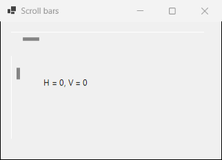
Scrollbars
Horizontal and vertical scroll bars
ring samples/UsingDotNet/Forms/30_scrollbars.ringSource code
# Horizontal and vertical scroll bars
load "dotnet.ring"
using {
"System.Drawing"
"System.Windows.Forms"
}
oForm = uiForm("Scroll bars",320,200)
oH = new HScrollBar() {
Location = new Point(15,15)
Size = new Size(280,20)
Maximum = 100
}
oForm.Controls.Add(oH)
oV = new VScrollBar() {
Location = new Point(15,50)
Size = new Size(20,120)
Maximum = 50
}
oForm.Controls.Add(oV)
oValues = uiLabel(oForm,"H = 0, V = 0",60,80,220,24)
oH.setValueChangedEvent("show()")
oV.setValueChangedEvent("show()")
uiRun(oForm)
# --------------------------------------------------------------------------
func show
oValues.Text = "H = " + oH.Value + ", V = " + oV.Value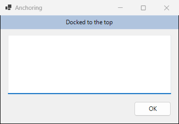
Anchor dock
Anchor and dock: controls follow the size of the form
ring samples/UsingDotNet/Forms/31_anchor_dock.ringSource code
# Anchor and dock: controls follow the size of the form
load "dotnet.ring"
using {
"System.Drawing"
"System.Windows.Forms"
}
oForm = uiForm("Anchoring",360,220)
oTop = uiLabel(oForm,"Docked to the top",0,0,360,28)
oTop {
Dock = "Top"
BackColor = uiColor("LightSteelBlue")
TextAlign = "MiddleCenter"
}
oBox = uiTextBox(oForm,15,40,330,120)
oBox {
Multiline = True
Anchor = "Top, Bottom, Left, Right"
}
oOk = uiButton(oForm,"OK",270,175,75,30,"")
oOk.Anchor = "Bottom, Right"
uiRun(oForm)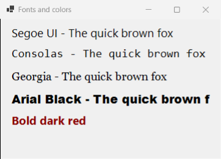
Fonts colors
Fonts, styles and colors
ring samples/UsingDotNet/Forms/32_fonts_colors.ringSource code
# Fonts, styles and colors
load "dotnet.ring"
using {
"System.Drawing"
"System.Windows.Forms"
}
oForm = uiForm("Fonts and colors",360,230)
nY = 10
for cName in ["Segoe UI","Consolas","Georgia","Arial Black"]
oLabel = uiLabel(oForm,cName + " - The quick brown fox",15,nY,330,30)
oLabel.Font = uiFont(cName,14,false)
nY += 36
next
oBold = uiLabel(oForm,"Bold dark red",15,nY,330,30)
oBold {
Font = uiFont("Segoe UI",14,true)
ForeColor = uiColor("DarkRed")
}
uiRun(oForm)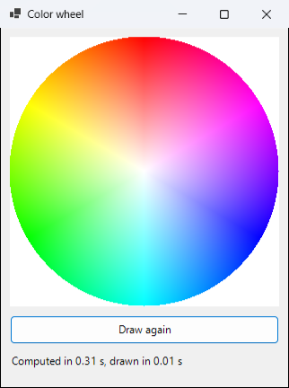
Color wheel
A color wheel drawn pixel by pixel on a bitmap when the button is clicked: first the color of every pixel is computed, then the pixels are drawn (the RingQt sample ColorWheel). A call into .NET costs several microseconds, so the whole picture is drawn with one call: one text of 3 bytes for each pixel. Run it with --draw to draw without a click.
ring samples/UsingDotNet/Forms/33_color_wheel.ringSource code
# A color wheel drawn pixel by pixel on a bitmap when the button is clicked: first the color of every pixel is computed, then the pixels are drawn (the RingQt sample
# ColorWheel). A call into .NET costs several microseconds, so the whole picture is drawn with one call: one text of 3 bytes for each pixel.
# Run it with --draw to draw without a click.
load "dotnet.ring"
using {
"System.Drawing"
"System.Windows.Forms"
}
nSize = 300 # the bitmap is nSize x nSize pixels
nRadius = nSize / 2
nPi = 3.14159265359
cPixels = "" # the computed colors of the picture: the bytes red, green, blue for each pixel, row after row
nComputeTime = 0
nDrawTime = 0
oForm = uiForm("Color wheel",nSize + 20,nSize + 100)
oPicture = uiPictureBox(oForm,10,10,nSize,nSize)
oButton = uiButton(oForm,"Draw",10,nSize + 20,nSize,32,"startDraw()")
oStatus = uiLabel(oForm,"",10,nSize + 62,nSize,20)
oCanvas = new UiCanvas(oPicture)
oCanvas.clear("White")
if find(sysargv,"--draw") > 0
startDraw()
ok
uiRun(oForm)
# --------------------------------------------------------------------------
# The click of the button: clear the picture, compute the color of every pixel, then draw them
func startDraw
oCanvas.clear("White")
nStart = clock()
computeWheel()
nComputeTime = (clock() - nStart) / clockspersecond()
nStart = clock()
drawWheel()
nDrawTime = (clock() - nStart) / clockspersecond()
oStatus.Text = "Computed in " + (floor(nComputeTime * 100) / 100) + " s, drawn in " + (floor(nDrawTime * 1000) / 1000) + " s"
oButton.Text = "Draw again"
# The color of every pixel, row after row: the hue is the angle around the center, the saturation is the distance from it. A pixel outside of the wheel is white.
func computeWheel
cPixels = ""
cWhite = char(255) + char(255) + char(255)
for nRow = 1 to nSize
nY = nRow - nRadius
nYSquared = nY * nY
cLine = ""
for nCol = 1 to nSize
nX = nCol - nRadius
nSaturation = sqrt(nX * nX + nYSquared) / nRadius
if nSaturation <= 1
nHue = (atan2(nX,nY) + nPi) / (2 * nPi)
cLine += hsvToBytes(nHue,nSaturation)
else
cLine += cWhite
ok
next
cPixels += cLine
next
# Draw the computed colors, all in one call, and show the picture once
func drawWheel
oCanvas.setPixels(0,0,nSize,nSize,cPixels)
oCanvas.show()
# The color of a hue and a saturation (0 to 1) at full brightness, as the 3 bytes red, green, blue (a text, not a list: no list is made for each pixel)
func hsvToBytes nHue, nSaturation
nSector = floor(nHue * 6)
nFraction = nHue * 6 - nSector
nP = floor((1 - nSaturation) * 255 + 0.5)
nQ = floor((1 - nSaturation * nFraction) * 255 + 0.5)
nT = floor((1 - nSaturation * (1 - nFraction)) * 255 + 0.5)
switch nSector % 6
on 0
return char(255) + char(nT) + char(nP)
on 1
return char(nQ) + char(255) + char(nP)
on 2
return char(nP) + char(255) + char(nT)
on 3
return char(nP) + char(nQ) + char(255)
on 4
return char(nT) + char(nP) + char(255)
off
return char(255) + char(nP) + char(nQ)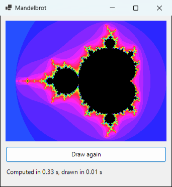
Mandelbrot
The Mandelbrot set drawn pixel by pixel when the button is clicked: each pixel is a point c of the complex plane, and its color is the number of steps that z = z * z + c takes to leave the circle of radius 2 (black for a point that never does). The colors are computed first, then the whole picture is drawn with one call. Run it with --draw to draw without a click.
ring samples/UsingDotNet/Forms/34_mandelbrot.ringSource code
# The Mandelbrot set drawn pixel by pixel when the button is clicked: each pixel is a point c of the complex plane, and its color is the number of steps that
# z = z * z + c takes to leave the circle of radius 2 (black for a point that never does). The colors are computed first, then the whole picture is drawn with one call.
# Run it with --draw to draw without a click.
load "dotnet.ring"
using {
"System.Drawing"
"System.Windows.Forms"
}
nWidth = 320 # the bitmap is nWidth x nHeight pixels
nHeight = 240
nLeft = -2.2 # the part of the plane that the picture shows
nRight = 1.0
nTop = 1.2
nBottom = -1.2
nMaxSteps = 80 # a point that has not left the circle after this many steps is in the set
aPalette = [] # the 3 bytes (red, green, blue) of each number of steps
cPixels = "" # the computed colors of the picture: the bytes red, green, blue for each pixel, row after row
nInside = 0 # the pixels that are in the set
nComputeTime = 0
nDrawTime = 0
oForm = uiForm("Mandelbrot",nWidth + 20,nHeight + 100)
oPicture = uiPictureBox(oForm,10,10,nWidth,nHeight)
oButton = uiButton(oForm,"Draw",10,nHeight + 20,nWidth,32,"startDraw()")
oStatus = uiLabel(oForm,"",10,nHeight + 62,nWidth,20)
oCanvas = new UiCanvas(oPicture)
oCanvas.clear("Black")
makePalette()
if find(sysargv,"--draw") > 0
startDraw()
ok
uiRun(oForm)
# --------------------------------------------------------------------------
# The click of the button: compute the color of every pixel, then draw them
func startDraw
oButton.Enabled = False
nStart = clock()
computeMandelbrot()
nComputeTime = (clock() - nStart) / clockspersecond()
nStart = clock()
oCanvas.setPixels(0,0,nWidth,nHeight,cPixels)
oCanvas.show()
nDrawTime = (clock() - nStart) / clockspersecond()
oForm.Text = "Mandelbrot"
oStatus.Text = "Computed in " + (floor(nComputeTime * 100) / 100) + " s, drawn in " + (floor(nDrawTime * 1000) / 1000) + " s"
oButton.Text = "Draw again"
oButton.Enabled = True
# The color of every pixel, row after row
func computeMandelbrot
cPixels = ""
nInside = 0
nStepX = (nRight - nLeft) / nWidth
nStepY = (nTop - nBottom) / nHeight
cBlack = char(0) + char(0) + char(0)
for nRow = 1 to nHeight
nY = nTop - (nRow - 0.5) * nStepY
nYSquared = nY * nY
cLine = ""
for nCol = 1 to nWidth
nX = nLeft + (nCol - 0.5) * nStepX
# the main cardioid and the disc on its left are in the set: they need no steps (most of the work of the picture would be there)
nQ = (nX - 0.25) * (nX - 0.25) + nYSquared
if nQ * (nQ + (nX - 0.25)) < 0.25 * nYSquared or (nX + 1) * (nX + 1) + nYSquared < 0.0625
nSteps = nMaxSteps
else
nSteps = escapeSteps(nX,nY)
ok
if nSteps >= nMaxSteps
nInside++
cLine += cBlack
else
cLine += aPalette[nSteps + 1]
ok
next
cPixels += cLine
if nRow % 20 = 0
oForm.Text = "Computing " + floor(nRow * 100 / nHeight) + "%"
new Application().DoEvents() # the window stays alive while the colors are computed
ok
next
# The number of steps of z = z * z + c before z leaves the circle of radius 2 (nMaxSteps when it does not)
func escapeSteps nCr, nCi
nZr = 0
nZi = 0
for nStep = 0 to nMaxSteps - 1
nZr2 = nZr * nZr
nZi2 = nZi * nZi
if nZr2 + nZi2 > 4
return nStep
ok
nZi = 2 * nZr * nZi + nCi
nZr = nZr2 - nZi2 + nCr
next
return nMaxSteps
# The colors for 0 to nMaxSteps - 1 steps: the hue goes round the color wheel as the number of steps grows
func makePalette
aPalette = []
for nSteps = 0 to nMaxSteps - 1
nHue = (0.6 + nSteps * 0.035) % 1
aPalette + hsvToBytes(nHue,0.85)
next
# The color of a hue and a saturation (0 to 1) at full brightness, as the 3 bytes red, green, blue (a text, not a list: no list is made for each pixel)
func hsvToBytes nHue, nSaturation
nSector = floor(nHue * 6)
nFraction = nHue * 6 - nSector
nP = floor((1 - nSaturation) * 255 + 0.5)
nQ = floor((1 - nSaturation * nFraction) * 255 + 0.5)
nT = floor((1 - nSaturation * (1 - nFraction)) * 255 + 0.5)
switch nSector % 6
on 0
return char(255) + char(nT) + char(nP)
on 1
return char(nQ) + char(255) + char(nP)
on 2
return char(nP) + char(255) + char(nT)
on 3
return char(nP) + char(nQ) + char(255)
on 4
return char(nT) + char(nP) + char(255)
off
return char(255) + char(nP) + char(nQ)